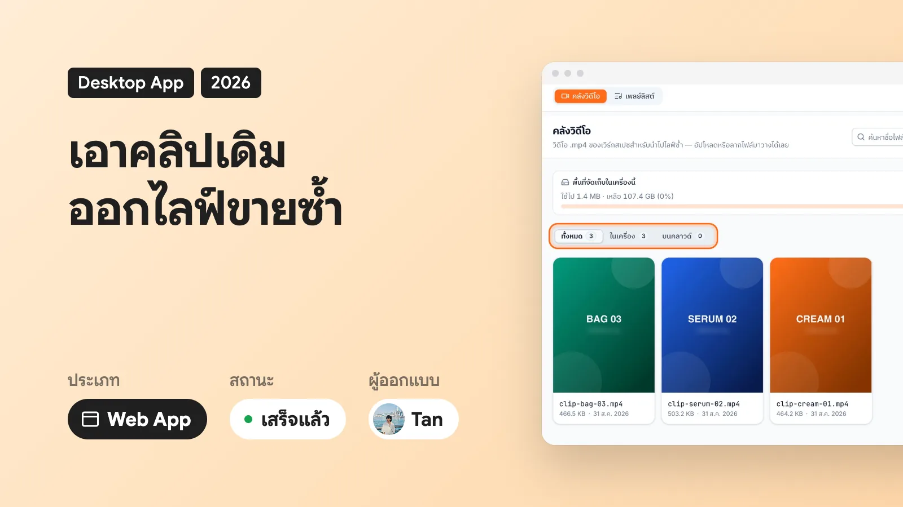
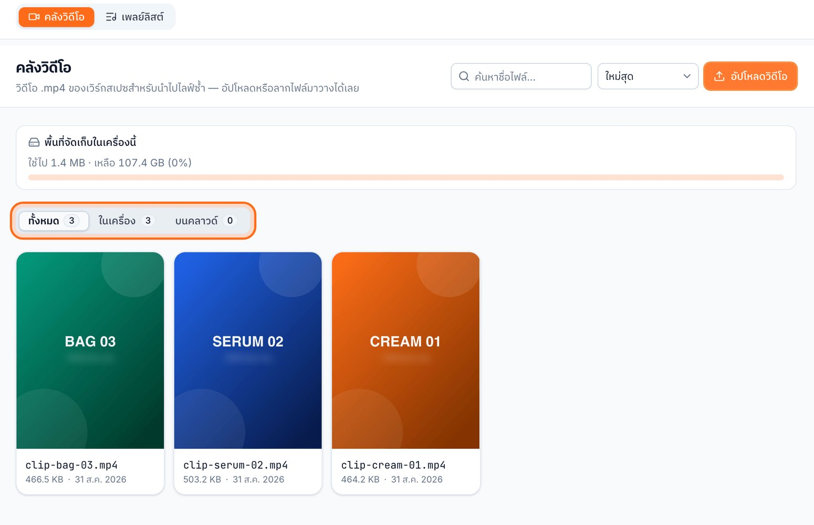
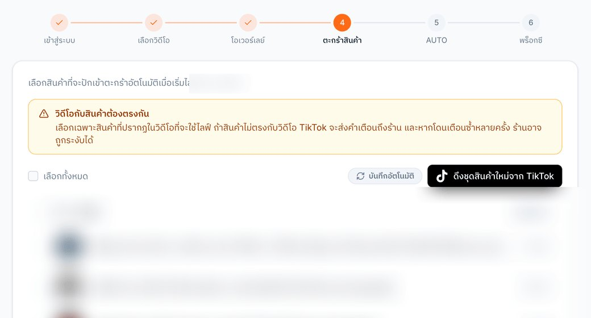
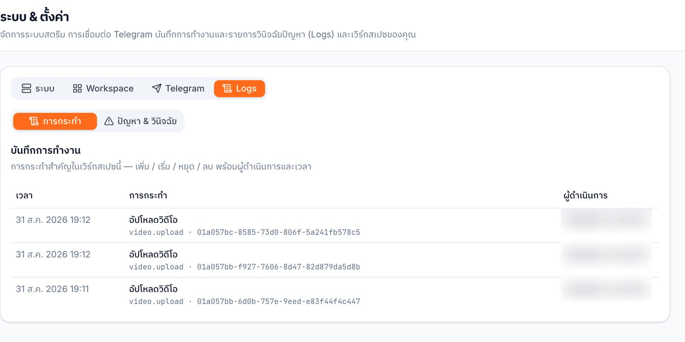
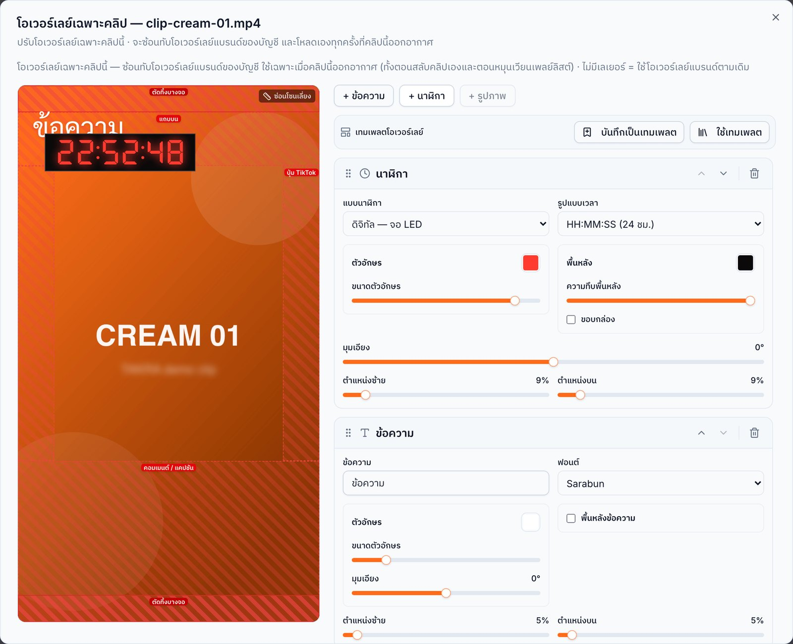
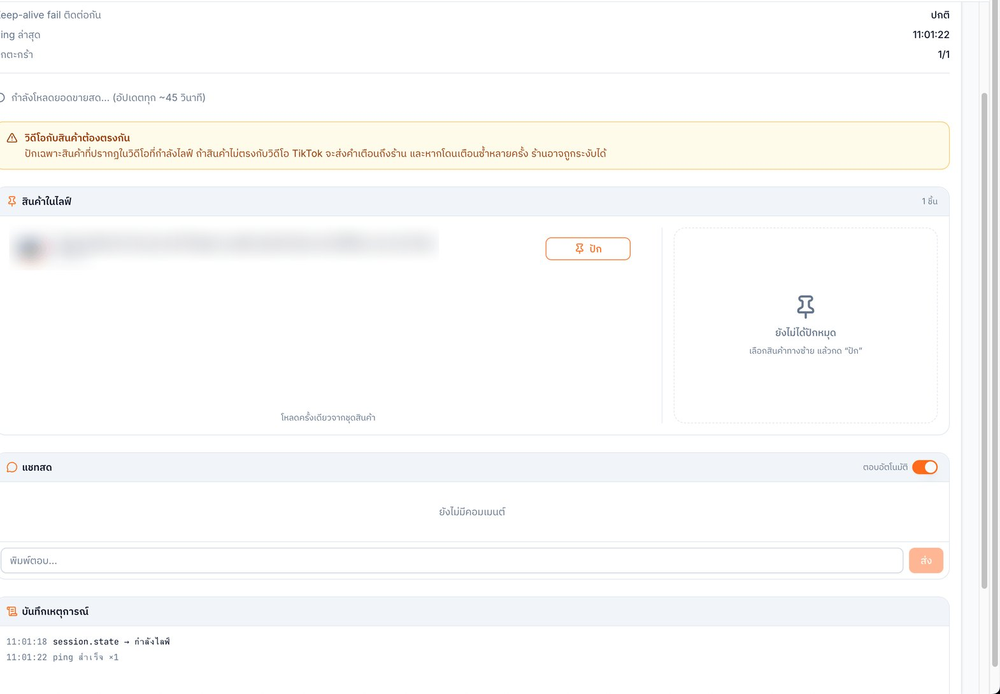
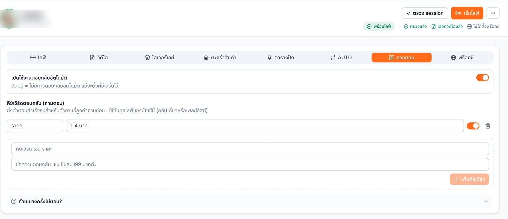
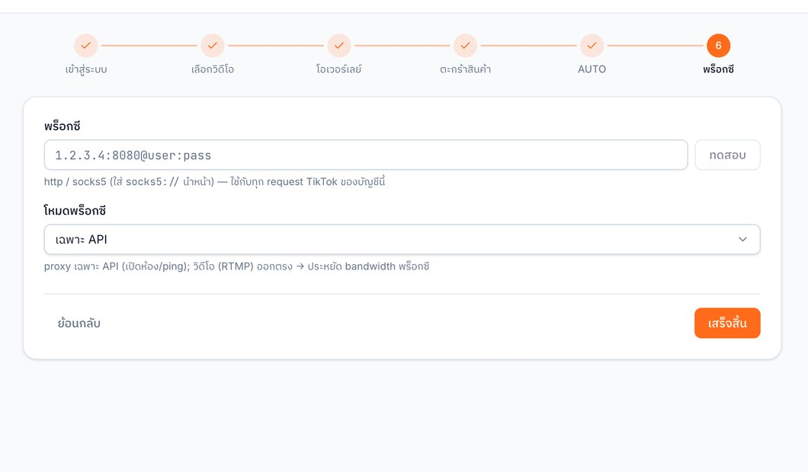
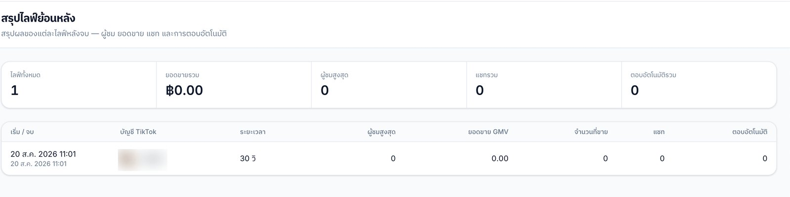

Desktop Control Room สำหรับ Re-broadcast คลิปออกไลฟ์
เดสก์ท็อป control room สำหรับ live commerce ที่แพ็ก Go backend, ffmpeg engine และ React SPA เข้ามาเป็นแอปเดียวติดตั้งง่าย — วนคลิปที่บันทึกไว้ออกเป็นไลฟ์อย่างเสถียร พร้อม overlay, chat สด และปักตะกร้าอัตโนมัติผ่าน browser oracle โดยข้อมูลไม่ต้องออกจากเครื่องผู้ใช้

แอปเดสก์ท็อปที่แพ็ก Go backend + ffmpeg engine + React SPA เข้ามาเป็นแอปเดียว — วนคลิปที่บันทึกไว้ออก RTMP เป็นสตรีมสด พร้อม overlay นาฬิกา/ข้อความ, chat สด, ปักตะกร้าสินค้า และคุมหลายบัญชีจากหน้าจอเดียว โดยข้อมูลไม่ต้องออกจากเครื่อง
ปัญหาที่เจอ
คนขายของไลฟ์ต้องออกอากาศเกือบตลอดเวลา — แต่ยืนพูดสดทั้งวันทั้งคืนคือทางไปสู่ burnout

ร้านที่ขายผ่านไลฟ์ต้อง "ติดจอ" ให้นานที่สุดถึงจะมียอด — แต่คนพูดสดทั้งวันไม่ไหว โดยเฉพาะกะดึก เครื่องมือที่ใช้กันคือเอา OBS + สคริปต์ + เครื่อง VM หลายตัวมาต่อกันเอง เปราะและพังกลางไลฟ์บ่อย ยิ่งถ้าดูแลหลายบัญชี/หลายห้องพร้อมกัน ยิ่งคุมไม่อยู่ โจทย์คือ: ทำ control room ตัวเดียวที่เอา "คลิปที่อัดไว้" มาวนออกเป็นไลฟ์ได้อย่างเสถียร
ยืนไลฟ์สดทั้งวันไม่ไหว
ยอดขายผูกกับเวลาออกอากาศ — แต่คนมีลิมิต โดยเฉพาะช่วงดึก ต้องมีวิธีเอาคลิปที่อัดไว้มา re-air โดยที่ประสบการณ์ผู้ชมยังใกล้เคียงไลฟ์จริง
เครื่องมือ = ต่อเอง เปราะ พังง่าย
OBS + สคริปต์ + VM หลายตัวมาต่อกันเอง ไม่มีตัวคุมกลาง — สตรีมหลุด ต้องมานั่งเฝ้ารีสตาร์ตเอง ไม่มี auto-restart / keep-alive ในตัว
หลายบัญชี/หลายห้อง คุมจากที่เดียวไม่ได้
เอเจนซีดูหลายแบรนด์พร้อมกัน แต่ละบัญชีต้องแยก identity + network egress ของตัวเอง — ไม่มีหน้าจอเดียวที่เห็นสถานะทุกห้องรวมกัน
คลิปเสียงหลุด/เงียบกลางไลฟ์
ไฟล์ที่เอามาวนบางทีเสียงสั้นกว่าภาพ หรือเงียบยาวกลางทาง — ออกอากาศความเงียบไปโดยไม่รู้ตัว เสียลูกค้าฟรีๆ
บาง action server เรียกเองไม่ได้
งานอย่าง chat / ปักตะกร้า / อ่านยอดขายสด ต้องมี "ลายเซ็นคำขอ" ที่สร้างจาก JS ของแพลตฟอร์มในหน้าเว็บที่ login แล้วเท่านั้น — backend ยิงเองตรงๆ ไม่ได้
วิธีแก้ปัญหา
รวมทุกชิ้นที่เคยต้องต่อเอง ให้เป็นแอปเดสก์ท็อปตัวเดียว — เปิดแล้วใช้ได้เลย ไม่ต้องตั้ง server

Re-air engine ในเครื่อง
ffmpeg push คลิปออก RTMP แบบ -c copy เดินตาม native frame-rate (ไม่ re-encode ถ้าไม่จำเป็น) + keep-alive ping ห้อง + auto-stop/auto-restart เมื่อสตรีมสะดุด
แพ็กทุกอย่างเป็นแอปเดียว
Electron หุ้ม Go backend (spawn เป็น sidecar loopback), ffmpeg static และ React SPA ไว้ในตัวเดียว — ผู้ใช้ไม่ต้องลง Docker/Go/Node เอง ติดตั้งแล้วรันได้ทันที
Command center คุมทุกห้องที่เดียว
หน้าคอนโซล React เดียวเห็นทุก session — เริ่ม/หยุดไลฟ์, สลับคลิป, ตั้ง overlay, ดู chat และยอดขายสด แยกตามบัญชีชัดเจน
การ์ดเสียงหลุดในตัว
pre-flight ตรวจไฟล์ด้วย ffprobe (เสียงสั้น/ไม่มีเสียง) ก่อนไลฟ์ + monitor เงียบยาวระหว่างออกอากาศ — กันไม่ให้ออกอากาศความเงียบ
Browser oracle เป็น "ตัวเซ็น"
hidden window ที่ login ไว้ ทำหน้าที่ยิงคำขอในหน้าเว็บ ให้ JS ของแพลตฟอร์มเติมลายเซ็นให้เอง — ปลดล็อก chat / ปักตะกร้า / GMV ที่ server เซ็นเองไม่ได้
วิธีทำงาน — 4 จังหวะ
ตั้งแต่เลือกคลิป จนวนออกเป็นไลฟ์พร้อม chat และยอดขายสด

เตรียม session
เลือกคลิป + ตั้ง overlay / proxy / ชุดสินค้าที่จะปักตะกร้า
กดไลฟ์
backend เปิดห้อง + ffmpeg push RTMP + keep-alive ping
Oracle ดักสด
hidden window ถอด chat/GMV → backend → SSE → คอนโซล
เฝ้า + วน
monitor เสียงหลุด + auto-restart ให้ไลฟ์ไม่ขาดจนจบ
Tech Stack & Architecture
โปรเซสตระกูลเดียวบนเครื่อง seller — ไม่มี app server บนคลาวด์, ไม่มี infra ต่อร้าน

Electron หุ้ม Go sidecar — แพ็ก backend + ffmpeg + SPA เป็นแอปเดียว ผู้ใช้ zero-setup, และ window เปิดบน origin ของ backend ทำให้ flow login OIDC เป็น first-party · SQLite (file: DSN) — desktop mode รันแบบ self-contained, migrate-on-start, ไม่ต้องมี DB server · Go (chi + sqlc) — production shape: ไม่มี ORM, ไม่มี inline SQL, multi-tenant ด้วย workspace_id ตั้งแต่วันแรก · React 19 + Vite + Tailwind v4 — คอนโซลที่ backend เสิร์ฟเองที่ origin เดียวกัน
สิ่งที่สร้าง — 8 ความสามารถหลัก
ยกมาจาก POC ที่พิสูจน์ใช้งานแล้ว แล้ว port ให้ได้พฤติกรรมเดิมบน stack Go / React / Electron

Re-air Engine
ffmpeg push RTMP แบบ -c copy native-rate + keep-alive ping + auto-stop/restart — แกนหลักที่วนคลิปออกเป็นไลฟ์
Overlay Compositor
ซ้อนนาฬิกา LED / ข้อความบนวิดีโอด้วย filter_complex + ขยับตำแหน่งสดผ่าน ZMQ — re-encode เฉพาะ session ที่มี overlay
Audio-Drop Guard
pre-flight ffprobe จับ NO_AUDIO/AUDIO_SHORT + runtime silencedetect — กันออกอากาศเงียบ
Browser Oracle
hidden partitioned window ต่อบัญชี รัน executeJavaScript ที่ preload ไว้ ให้หน้าเว็บเซ็นคำขอเอง — โครงกลางที่ chat/basket/GMV ใช้ร่วม
Realtime Chat
oracle ถอด comment/viewer สด → /ingest/chat → SSE broker fan-out → panel ในคอนโซล (dedup by msgId)
Manual Reply
พิมพ์ตอบจาก UI → in-memory queue → oracle ยิง message/chat ในหน้าเว็บ → โชว์เมื่อ delivered จริง (ไม่ optimistic)
Product Pin (ตะกร้า)
เตรียมชุดสินค้า (product_sets) → กดไลฟ์ → pin queue + afterLive hook → oracle ปักอัตโนมัติ พร้อมสถานะ "ปักแล้ว X/X"
Per-Account Egress
network egress ต่อบัญชี (utls fingerprint + SOCKS5/HTTP CONNECT) — traffic ของแต่ละ identity แยกกันชัด
หน้าตา Session Console
เปิดคลิป → กดไลฟ์ → เห็น chat, viewer, ยอดขาย และ overlay รวมในหน้าจอเดียว

| Channel | สด | รายละเอียด | |
|---|---|---|---|
| Chat | SSE | 42 ข้อความ/นาที · ตอบสด | reply |
| GMV | poll 45s | ยอดสด · top 5 SKU | panel |
| Overlay | on | นาฬิกา + ข้อความ · ZMQ move | edit |
ffmpeg -re -i clip.mp4 -c copy -f flv 'rtmp://live.…/app/<stream-key>'
Hack กับปัญหา
6 โจทย์วิศวกรรมที่ต้องคิดทางแก้เอง — desktop runtime + media core + browser automation

รวม 3 โปรเซสให้เป็นแอปเดียวติดตั้งง่าย
Go backend, ffmpeg และ SPA เป็นคนละ runtime — จะให้ seller ลงเองทีละตัวไม่ได้ ต้องแพ็กรวมและคุม lifecycle ให้เนียน
spawn Go binary เป็น sidecar (loopback), รอ /healthz 200 ก่อนเปิด BrowserWindow บน origin ของ backend — ทำให้ flow OIDC login → callback → cookie เป็น first-party ทั้งหมด · ffmpeg static ฝังมากับ package (electron-builder)Overlay ชนกฎ "ห้าม re-encode"
แกน re-air ล็อก -c copy ไว้ (invariant: ไม่ re-encode = คุณภาพ/CPU คงที่) แต่การซ้อนนาฬิกา/ข้อความต้องผ่าน filter_complex = ต้อง re-encode
libx264 + filtergraph) เฉพาะ session ที่มี overlay เท่านั้น — no-overlay ยังเป็น -c copy เป๊ะ · เป็น decision ระดับ media core ที่ตั้งใจ scope ไว้แคบใส่ตัวจับเสียงเงียบใน stream-copy ไม่ได้
silencedetect เป็น audio filter (-af) แต่ push หลักเป็น -c copy — เติม -af ลงไปตรงๆ ทำ stream-copy พัง
-af silencedetect -f null -) เป็น co-goroutine ที่ decode แค่เสียงแล้วทิ้งผล — push หลักยัง -c copy วิดีโอไม่ถูกแตะ · scan stderr สดแทนอ่าน log ทั้งไฟล์บาง action ต้องลายเซ็นจากหน้าเว็บที่ login
chat / ปักตะกร้า / GMV ต้องมีลายเซ็นคำขอที่สร้างโดย JS ของแพลตฟอร์มในหน้า login แล้วเท่านั้น — Go เซ็นเองไม่ได้
session.fromPartition) รับงานจาก backend ผ่าน validated IPC (sender id + size cap) แล้วเรียก executeJavaScript ที่ preload ไว้ (ห้าม string-interpolate logic เข้าหน้า remote) ให้หน้าเว็บ fetch + เซ็นเอง → ส่งผลกลับchat/GMV เป็นข้อมูลสด — ไม่ควรลง DB ทุกชิ้น
คอมเมนต์และยอดขายสดไหลเข้ามาเร็วมาก ถ้าเขียน DB ทุก event = คอขวด และไม่ได้ต้องการ history ข้าม restart
credential ต่อบัญชีต้องไม่รั่ว
cookie/credential ของแต่ละ identity คือความลับชั้นสูงสุด — เก็บ plaintext หรือ log ออกมาเมื่อไหร่คือจบ
length ไม่เคย log ค่า · desktop↔backend ใช้ per-machine key (constant-time bearer, loopback เท่านั้น) แทน static key ที่ hardcode ไว้Design Decision ที่ตั้งใจเลือก
ขอบเขตที่จงใจ "ทำแคบ" — เพื่อให้ implement ตรงและ maintain ง่าย

ทั้งระบบรันบนเครื่อง seller — ไม่มี app server กลาง, credential ไม่ออกนอกเครื่อง, re-encode เฉพาะเมื่อมี overlay จริง, และเก็บลง DB เฉพาะสิ่งที่ต้องคงข้าม restart เท่านั้น ขอบเขตที่คมตั้งแต่ต้นทำให้ทุก feature ต่อยอดจากแกน re-air เดิมได้ โดยไม่ทำให้ core พองหรือช้าลง
Desktop-local
รันบนเครื่อง seller ข้อมูล/credential ไม่ออก cloud
-c copy invariant
re-encode เฉพาะ session ที่มี overlay เท่านั้น
Transient by default
chat/GMV เป็น live persist เฉพาะที่ต้องมี history
Vault ทุก secret
envelope encryption + log แค่ length ไม่เคย log ค่า
Knowledge Domain ที่แข็งขึ้น
5 พื้นที่ความรู้ที่ระดับเราขยับขึ้นจริงจากการทำโปรเจกต์นี้

เข้าใจการแพ็ก native backend เป็น sidecar, จัดการ lifecycle (spawn → wait /healthz → teardown), ทำ OIDC login ให้เป็น first-party ผ่าน loopback origin และ bundle binary ต่อ target ด้วย electron-builder (dmg/nsis) บทเรียน: "แอปเดียวจบ" สำหรับผู้ใช้ = งานประกอบ runtime หลายตัวหลังบ้านที่ต้องคุมให้เนียน
ทำ RTMP push แบบ stream-copy vs re-encode, เขียน filter_complex ซ้อน overlay, คุมตำแหน่งสดผ่าน ZMQ, จับเสียงเงียบด้วย silencedetect ที่รันคู่ขนานโดยไม่แตะ push หลัก บทเรียน: streaming ไม่ใช่ black box — เข้าใจว่าเมื่อไหร่ควร copy เมื่อไหร่ต้อง re-encode คือการควบคุมทั้ง CPU และคุณภาพ
chi + sqlc (ไม่มี ORM, ไม่มี inline SQL — บังคับด้วยเทสต์), goose migrations ฝังใน binary, multi-tenant ด้วย workspace_id ทุก query, และ SSE broker เป็น live fan-out บทเรียน: การตั้งกฎเชิงโครงสร้าง (tenant guard, no-inline-SQL) ตั้งแต่วันแรก ทำให้ระบบโตต่อได้โดยไม่พัง
ใช้ partitioned session ต่อบัญชี, executeJavaScript เรียก preloaded function (ไม่ string-interpolate เข้าหน้า remote), และ validated IPC (sender id + size cap) พร้อมเข้าใจ tradeoff ของ contextIsolation:false บทเรียน: automation ที่ปลอดภัยคือการแยก context ที่ไม่ trust ออกให้เด็ดขาด แล้วคุยกันผ่าน channel ที่ตรวจสอบได้
envelope encryption ทุก secret, per-machine key แทน static backdoor, log แค่ length, และตัดสินใจว่าอะไร persist / อะไร transient ตั้งแต่ออกแบบ บทเรียน: security ที่ดีเริ่มจาก default ที่ปลอดภัย + ขอบเขตที่คม ไม่ใช่การไปแปะทีหลัง